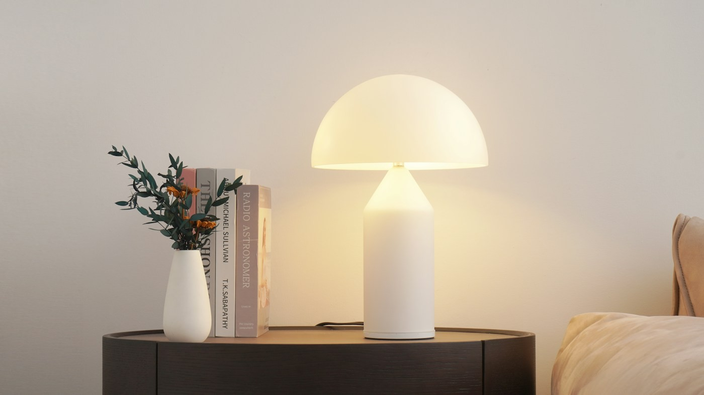
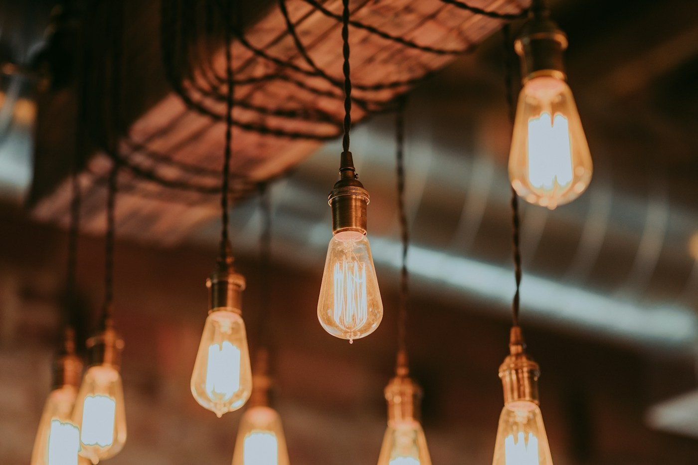
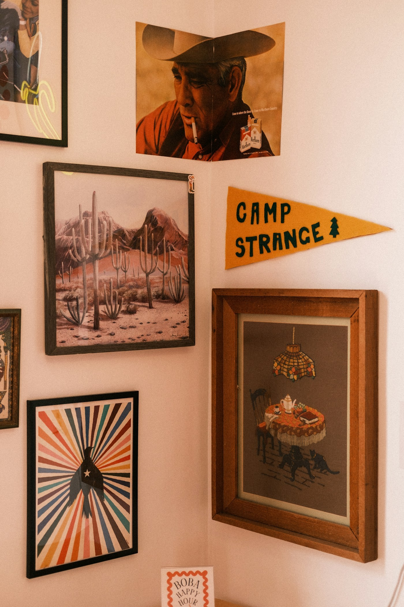
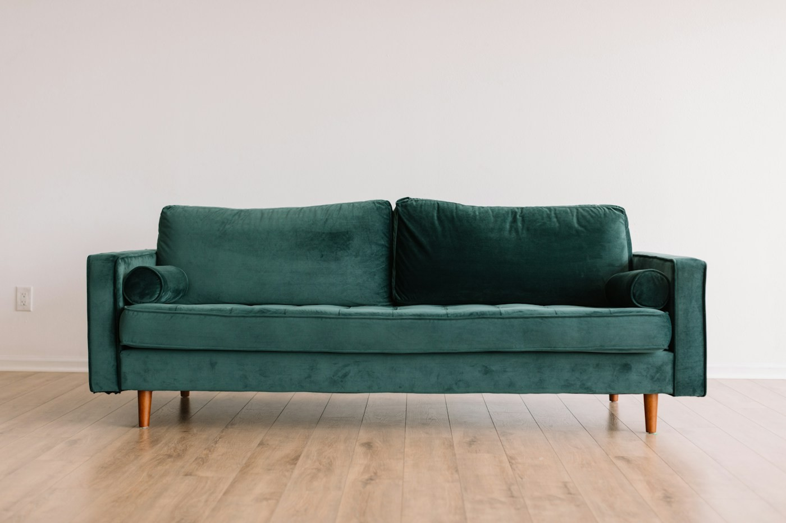
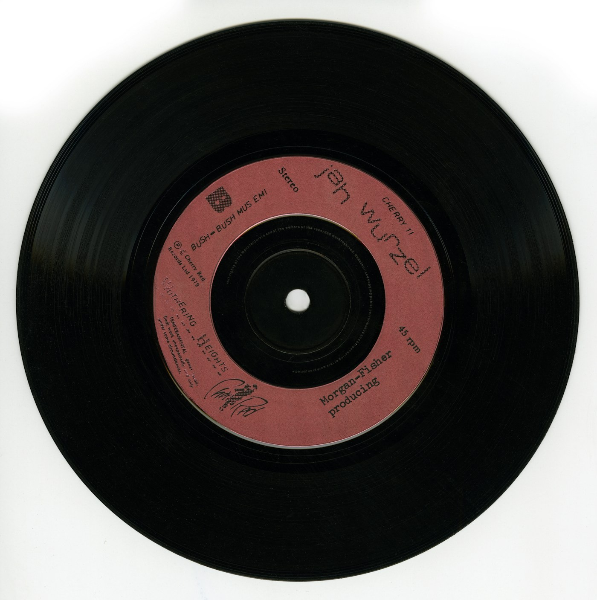
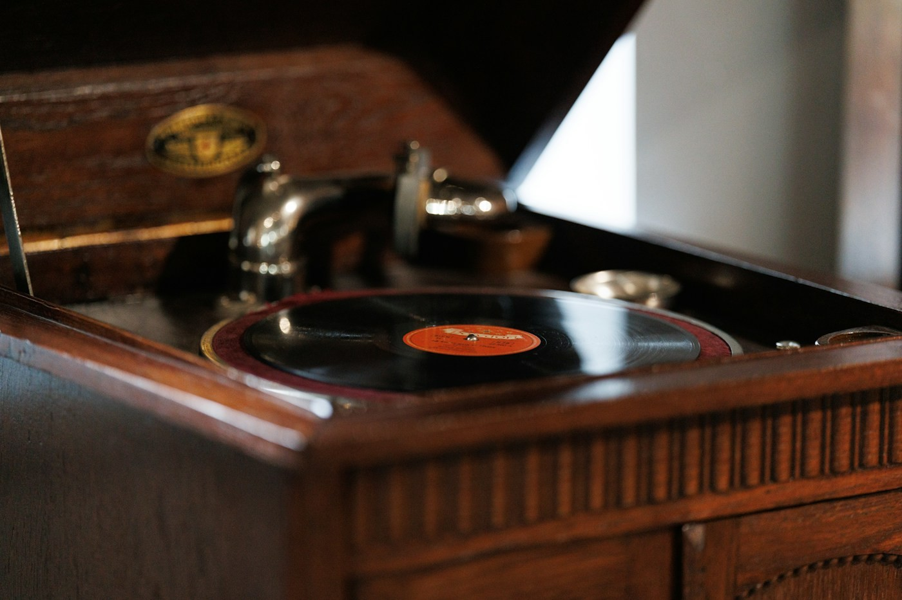

La honguito
Una luz suave para llegar a casa.
La luz que prendés al llegar. Ese cuadro.
El disco que no te cansás de escuchar.
Encontrá las piezas de tu propio ritual.

Una luz suave para llegar a casa.

Luz suspendida. Calidez que acompaña.

Arte y recuerdos que habitan la pared.

Curvas suaves. Sobremesas largas.

Un disco que siempre vuelve.

Madera, aguja y otra canción.
6 piezas, muchas formas de habitar.Fotos de inspiración · Vistas 3D ilustrativas.
Hay canciones que hacen de cualquier lugar una casa. Elegí un ambiente, bajá un poquito el volumen y dejá que la tarde siga.
Música ambiental original, creada para este espacio.
El sonido empieza cuando vos elegís.
Ahora sí, mové las cosas.
Probá un color, cambiá la luz y mirá
cómo el mismo espacio cuenta otra historia.
Activá la aceleración gráfica o probá otro navegador para explorar la sala.
Un pequeño espacio para experimentar. Los cambios son tuyos, por este ratito.
La que tiene tu color favorito. Un disco que vuelve a sonar. Un lugar para sentarse sin mirar la hora.
Casa Groove es una pequeña exploración de interiores, nostalgia y ganas de estar a gusto. Pasá, probá y quedate el tiempo que quieras.
Volver a mi rincón